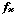
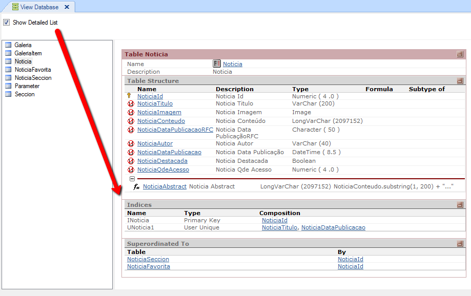

PurposeAllows you to select and view the Model's tables. You can list all KB Tables through GeneXus toolbar option : View / List Database, or by selecting a single Table object and chosing their contextual menu option "List". Then you can drag and drop new tables to the list. Description
The window is divided in two, the left pane will display a list of selected tables and the right pane lists the composition of the tables that have been selected from the left panel.
The key symbol indicates that the attribute is key of the table. The arrow symbol indicates that the attribute is inferred by the subtype group. The  symbol indicates that the attribute is formula and shows its composition.  |